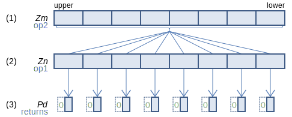
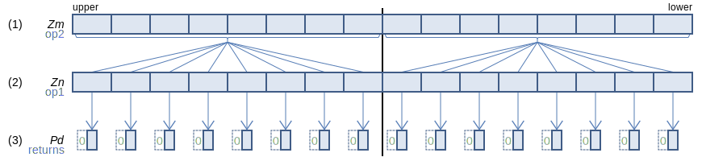
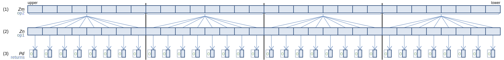
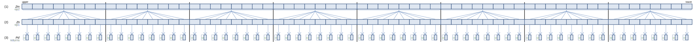
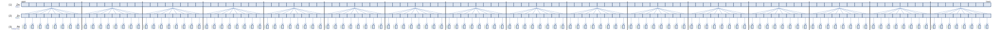

SVE Instruction List by Dougall Johnson
NMATCH: Detect no matching elements, setting the condition flags
NMATCH Pd.H, Pg/Z, Zn.H, Zm.H (SVE2+NS
svbool_t svnmatch[_s16](svbool_t pg, svint16_t op1, svint16_t op2)
svbool_t svnmatch[_u16](svbool_t pg, svuint16_t op1, svuint16_t op2)
128-bit SVE
Compare each 16-bit element from (2) with all 16-bit elements from the same 128-bit segment in (1), and set the corresponding predicate bit in (3) to 1 if none are equal, or zero otherwise. Flags are set based on the resulting predicate.
256-bit SVE
Compare each 16-bit element from (2) with all 16-bit elements from the same 128-bit segment in (1), and set the corresponding predicate bit in (3) to 1 if none are equal, or zero otherwise. Flags are set based on the resulting predicate.
512-bit SVE
Compare each 16-bit element from (2) with all 16-bit elements from the same 128-bit segment in (1), and set the corresponding predicate bit in (3) to 1 if none are equal, or zero otherwise. Flags are set based on the resulting predicate.
Larger sizes
1024-bit SVE
Compare each 16-bit element from (2) with all 16-bit elements from the same 128-bit segment in (1), and set the corresponding predicate bit in (3) to 1 if none are equal, or zero otherwise. Flags are set based on the resulting predicate.
2048-bit SVE
Compare each 16-bit element from (2) with all 16-bit elements from the same 128-bit segment in (1), and set the corresponding predicate bit in (3) to 1 if none are equal, or zero otherwise. Flags are set based on the resulting predicate.
Report mistakes or give feedback
Inspired by and based on the x86/x64 SIMD Instruction List by Daytime.